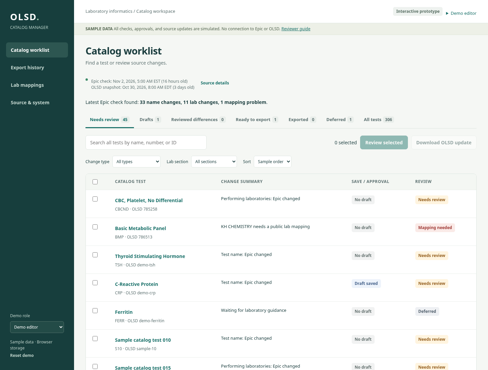
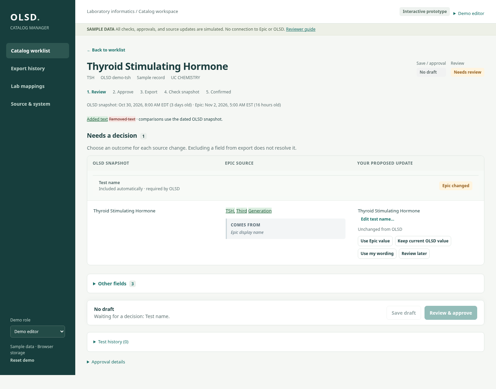
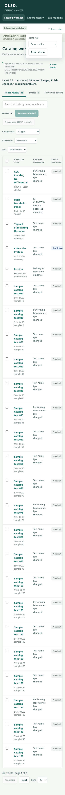

OLSD catalog workflow prototype
Revision 5 · independent-review corrections. All records and roles are sample data.
Open the prototype · Complete HTML/JavaScript source · Browser regression script · Dated verification and tested commit
Terms used here
- OLSD
- The online laboratory test directory maintained in this project.
- Catalog steward
- A person who reviews and maintains laboratory catalog content; the prototype calls this role an editor.
- Posit Connect
- The institution’s platform for hosting the planned R/Shiny application.
- Helix
- The project’s existing Epic-derived reporting source, accessed read-only.
- Pin
- A versioned stored dataset managed through the R pins package. The production plan uses one shared catalog dataset; this prototype instead stores sample data in the browser.
Sample data only. No live Epic, OLSD, Connect, Helix, or pin connections are made. Export files contain illustrative clinical wording and must not be imported into OLSD. Demo role controls are not authentication.
What catalog stewards need
- Find any test, regardless of its workflow status, and compare a dated OLSD snapshot, Epic data, and proposed catalog content.
- Review the summary of nightly changes and filter by change type or lab section.
- Make an explicit choice: Use Epic value, Keep current OLSD value, Use my wording, or Review later. Export selection alone never resolves a source change or mapping problem.
- Save drafts explicitly, inspect exact unsaved changes, preserve intentional wording, and keep review choices and their reasons visible.
- Approve decided updates, download only approved files, and distinguish exported content from values confirmed in a later snapshot.
- Use administrator-only lab mappings, category governance, and shared snapshot updates.
Reviewer walkthrough
- Choose Reset demo first. The browser retains sample edits. Use the top-bar Demo editor menu, or the sidebar on desktop. Reset and role controls are also available under Source & system on a phone.
- Select CBCND and BMP, then Review selected. The cards include the open Epic change even if the proposed value still matches OLSD. Neither undecided test has an approval checkbox. BMP names its missing KH CHEMISTRY mapping and the administrator next step.
- Open CBCND (not CBC with Differential). Choose Use Epic value for Performing laboratories and Save draft. The choice moves into Decided and stays visible. Review & approve shows all three source/value columns. Approval does not upload or publish to OLSD.
- Expand Other fields. Test name is read-only until Edit is chosen. Try editing rejection criteria and open Review unsaved changes. Compare the exact before/after values. Choose Continue editing, then Save draft. Review and approve the changed update, or deliberately discard it at the navigation prompt before continuing; do not leave an unexplained unsaved edit.
- Open TSH, choose Keep current OLSD value, optionally add a reason, and Save draft. Because no OLSD value changes, this finishes without approval or export. Find the saved choice under Reviewed differences. Simulate the next Epic check in Source & system and reopen TSH: the prior kept value, date, reason, and old/new Epic values should be visible.
- Use the top-bar role menu to choose Demo administrator. On phones, open that same menu or use the Demo role selector in Source & system; it also lets you switch back to editor. Resolve KH CHEMISTRY in Lab mappings. Approval checkboxes start unticked. Saving the mapping with none selected must not claim approval. The page adds the mapping to its table and offers a link back to BMP.
- Use the initially approved CBC with Differential record to try Download OLSD update. Editing it first disables download until the edits are saved or discarded. Saving withdraws its old approval. A file download is recorded only when the file’s download button is used. Opening a multi-file chooser and closing Done creates no export records.
- To see extra-category reconciliation: open CBC with Differential, expand Other fields, Edit Search categories, expand the additional-category choices and add * Emergency Test List. Save draft and explicitly review/approve this changed update. Download the Excel file. As Demo administrator, go to Export history and choose Load partial-match example for that file. The result should show the extra legacy category separately. A matching example records the dated observed match, not real-time publication.
- Try global search for Ferritin or CBC with Differential from Needs review. Test change-type and lab-section filters, name sorting, and paging through the 306 sample records. Try browser Back, a test URL refresh, keyboard focus, and the role controls on a narrow viewport.
Review questions
- Does an approval correspond exactly to choices the user actually made and the source values they saw?
- Can open Epic changes, changed OLSD snapshots, and missing mappings be resolved only through explicit outcomes?
- Are open decisions, decided choices, approved changes, and completeness-only fields distinct?
- Are saved drafts, outdated approvals, ready files, downloaded files, and dated snapshot confirmations understandable?
- Do highlighted additions/removals, decision notes, and visible history make reviews easier?
- Are blocked actions explained near the action, with a practical next step and working return path?
Production gaps
- Institutional source access, source schemas and identity validation, scheduled Epic queries, safe serialization of shared writes, backup/recovery, and exact-value migration fidelity.
- Server-side authentication and authorization. Changing a demo role in browser tools is not a permission system.
- The Excel exporter now reads sample control values from each test’s stored snapshot metadata. Confirm with the vendor how Test Managed By, Use ARUP Test Name, and ARUP Test Number affect updates, including blank values; production must capture real snapshot values and validate them rather than seed defaults.
- Every production approval must retain its exact OLSD/Epic basis, selected output values, source dates, authenticated approver, and approval timestamp. The prototype now captures these in its sample approval objects.
- A later OLSD snapshot can reveal expected exported values or unexpected conflicting changes. Clinical interpretation, field-specific importer rules, removal workflows, and production failure/recovery still require validation.
- Download history records a browser download initiation; a web application cannot prove a person saved or imported a file. A matching snapshot does not prove real-time publication.
No uploaded handoff, SQL, archived pins, credentials, private workbooks, or browser-local reviewer drafts are part of this public site.
Worklist and nightly changes

Open and decided reviews

Phone controls
